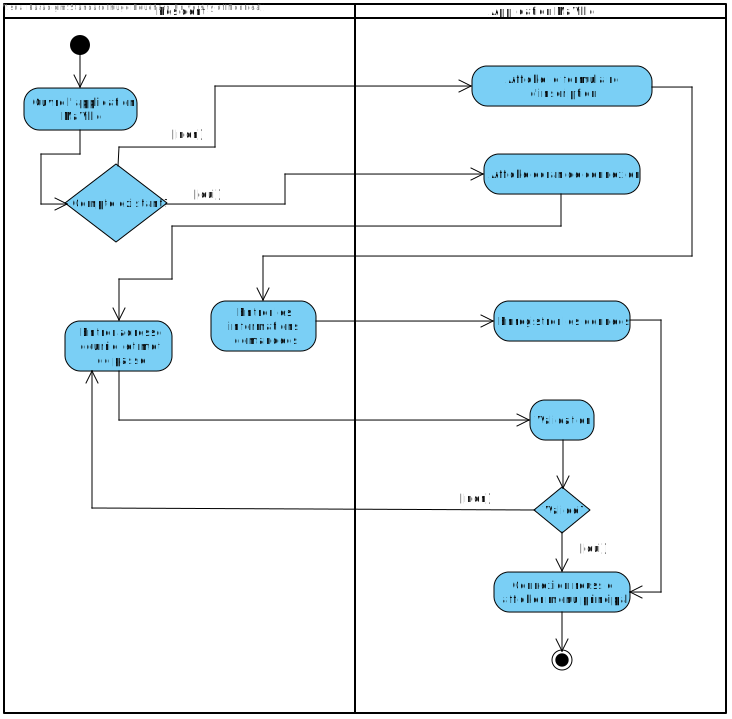
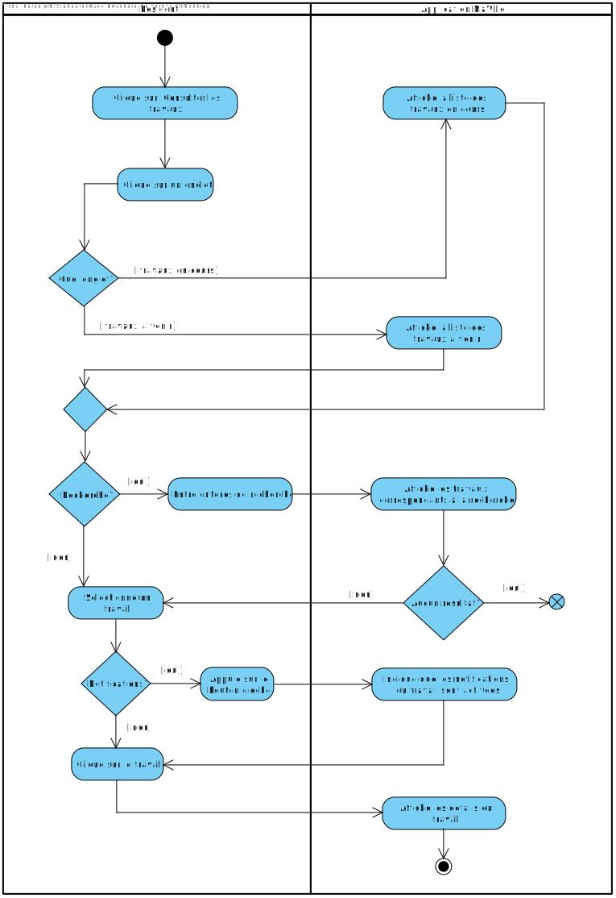
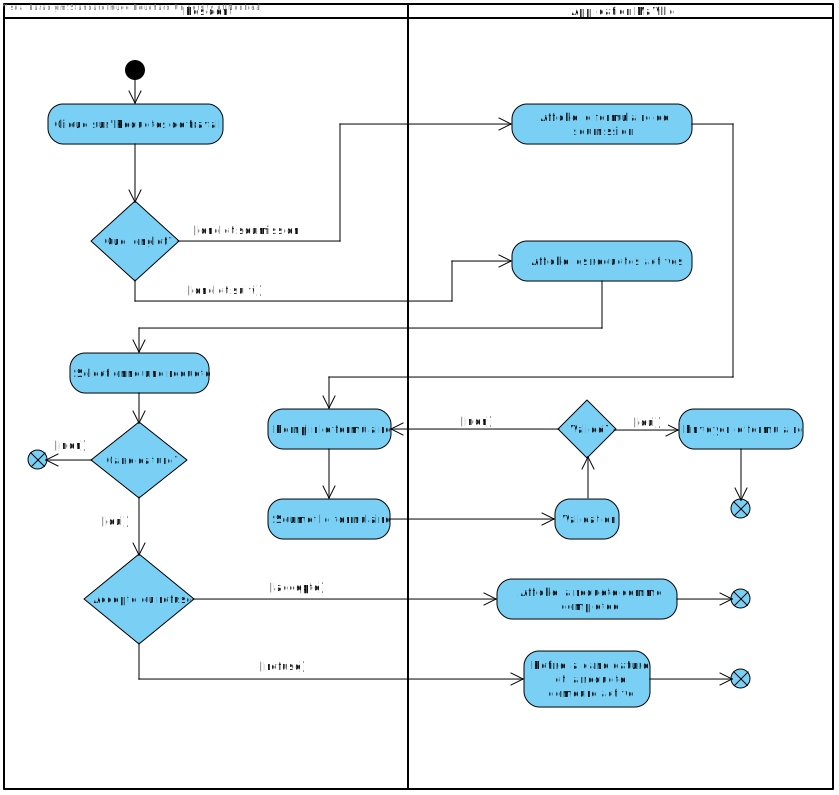
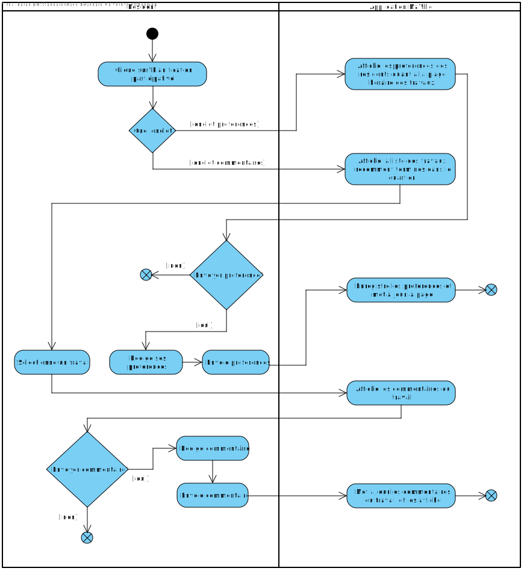
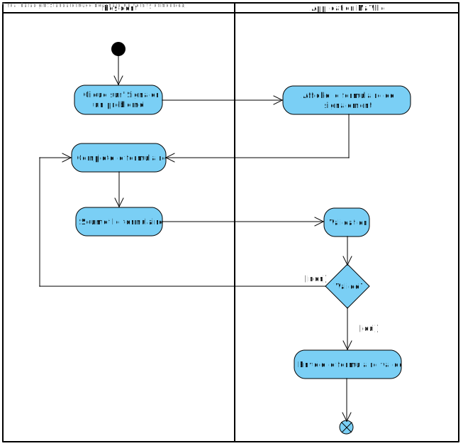
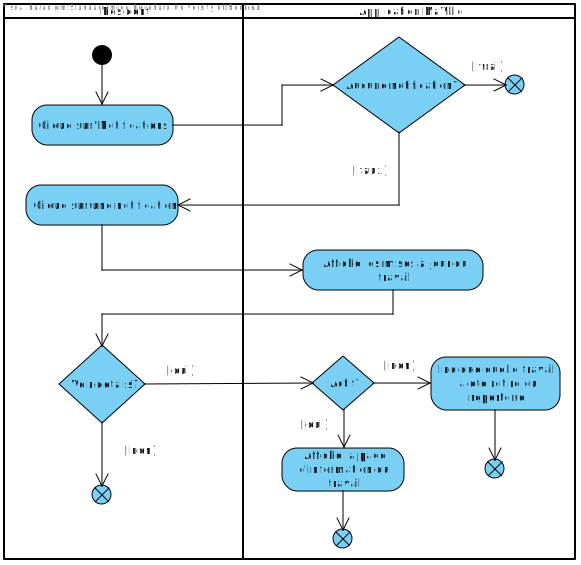
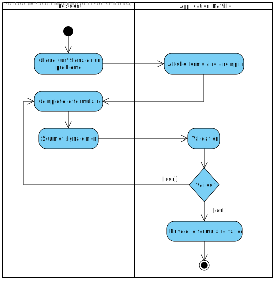
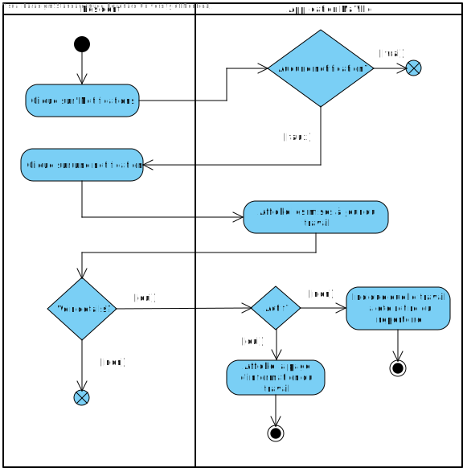

Cadre du projet
Introduction
Ce projet consiste à créer l'application MaVille qui a pour but de développer une collaboration étroite entre les citoyens de la ville de Montréal ainsi que ses nombreux intervenants responsables des travaux publiques. Cette application permettra aux citoyens de prendre part à une planification participative qui vise à donner une voix aux résidents en ce qui concerne les travaux. Celle-ci permettra aussi de consulter les travaux en cours et à venir, de soumettre des requêtes de travail, de signaler des problèmes et de recevoir des notifcations personnalisées! Ce projet sera aussi utilisé par les intervenants pour soumettre des projets de travail ainsi que pour mettre à jour les informations relatives aux chantiers. Ainsi, la collaboration entre ces deux partis permettra de diminuer les impacts des entraves sur le quotidien des citoyens et fera de Montréal une ville modèle.
Échéancier
Présentation de l'échéancier et la distribution des taches (au moins pour le devoir 1)
Hypothèses (optionnel)
Présentation des hypothèses faites dans l'élaboration des exigences et l'analyse
Exigences
Après un échange avec le client et une familiarisation avec le fonctionnement des travaux et chantier réalisé par la villes et les entraves que cela peut engendré, nous avons réaliser ce glossaire qui vise à éclaircir les termes clés dans le domaine.
Glossaire
- Résident
- Personne ayant le statut de résident de la ville de Montréal.
- Planification participative
- Approche de la gestion de projets par les résident (ex: participation dans l'identification des besoins spécifiques du quartier pour la réalisation d'un chantier d'aménagement).
- Intervenant
- Organisme, groupe ou individu du secteur publique (gouvernement, mairie, etc) ou privé (entreprise de construction) qui soumet et met à jour l'état des travaux. Il prend aussi en compte les problèmes et requêtes des résidents.
- Coordination des travaux
- Ensembles des méthodes mises en place pour unifier la réalisation des travaux.
- Authentification
- Inscription ou connexion d'un utilisateur à MaVille. Le processus varie selon le rôle de l'utilisateur (résident ou intervenant).
- Requête de travail
- Formulaire?, communication avec un agent?, pour mettre un travail, chantier en attente.
- Mise à jour
- Notification? barre d'état? pour actualiser l'information sur l'état d'un chantier
Persona (optionnel)
Cas d'utilisation
À propos des acteurs
Le résident et l'intervenant sont représentés sans relation de généralisation, car chacun a un rôle différent que l'autre ne peut pas réaliser. Par exemple, un résident ne pourrait pas remplacer un intervenant, car celui-ci ne peut pas mettre à jour les informations liées à un chantier. Le résident et l'intervenant n'ont en fait aucun cas d'utilisation en commun; ce sont deux parties distinctes de l'application.
À propos des relations
Tous les cas d'utilisation du résident et de l'intervenant incluent l'inscription/l'authentification, car celle-ci est nécessaire afin d'accéder au reste de l'application et, ultimement, aux actions possibles. Toutes les autres relations sont les relations d'association du résident et de l'intervenant.
Scénarios
Scénario principal
- Le résident ouvre l'application MaVille.
- Le système affiche l'écran d'authentification.
- Le résident sélectionne l'option pour se connecter.
- Le système affiche l'écran de connexion.
- Le résident entre son adresse courriel et son mot de passe pour se connecter.
- Le résident appuie sur le bouton pour se connecter.
- Le système valide les informations entrées.
- Le résident est connecté à l'application.
- Le système affiche le menu principal.
Scénarios alternatifs
Scénario principal
- Le résident sélectionne l'option pour accéder au répertoire des travaux.
- Le système ouvre le répertoire des travaux, dans l'onglet 'en cours'.
- Le système affiche la liste des travaux en cours par ancienneté croissante.
- Le résident demeure sur l'onglet actuel.
- Le résident entre des critères de recherche.
- Le système affiche la liste des travaux correspondants à la recherche.
- Le résident sélectionne un travail.
- Le résident clique sur le bouton en cloche pour activer les notifications.
- Le système indique que les notifcations pour le travail sont activées.
- Le résident clique sur le travail sélectionné.
- Le système affiche les détails du travail sélectionné.
Scénarios alternatifs
Scénario principal
- Le résident sélectionne l'option 'Soumission d'une requête de travail'.
- Le système affiche le formulaire à remplir.
- Le résident remplit le formulaire en détaillant sa requête.
- Le résident ajoute des pièces jointes si nécessaire.
- Le résident soumet la requête.
- Le système soumet la requête à la ville.
Scénarios alternatifs
Scénario principal
- Le résident sélectionne l'option 'Suivi des requêtes de travail'.
- Le système affiche la liste des requêtes.
- Le résident clique sur une requête.
- Le système affiche l'état de la requête.
- Le résident accepte la candidature déposée par un intervenant.
- Le système met à jour la requête et la marque comme terminée.
Scénarios alternatifs
Scénario principal
- Le résident sélectionne l'option 'Préférences de plage horaire'.
- Le système affiche la liste des préférences de plage horaire déjà envoyées dans son quartier ainsi qu'un bouton pour envoyer ses préférences.
- Le résident clique sur le bouton pour envoyer ses préférences.
- Le système affiche la boîte texte à remplir.
- Le résident rédige ses préférences de plage horaire.
- Le résident soumet ses préférences.
- Le système met à jour la page pour afficher les préférences nouvellement ajoutées.
Scénarios alternatifs
Scénario principal
- Le résident sélectionne l'option 'Avis sur les travaux'.
- Le système affiche la liste des travaux terminés dans le quartier.
- Le résident clique sur un travail.
- Le système affiche tous les avis déjà présents pour ce travail ainsi qu'un bouton pour envoyer un avis.
- Le résident clique sur le bouton pour envoyer son avis.
- Le système affiche la boîte texte à remplir.
- Le résident rédige son commentaire quant au travail.
- Le résident soumet son avis.
- Le système met à jour la liste d'avis en ajoutant le nouvel avis.
Scénarios alternatifs
Scénario principal
- L'intervenant sélectionne l'option pour signaler un problème.
- Le système affiche un formulaire à remplir.
- Le résident remplit le formulaire avec les informations demandées.
- Le résident ajoute des pièces jointes si nécessaire.
- Le résident soumet le signalement.
- Le système achemine le formulaire rempli à la ville de Montréal.
Scénarios alternatifs
Scénario principal
- Le résident sélectionne l'option pour accéder aux notifications.
- Le système affiche l'ensemble des notifications reçues.
- Le résident clique sur une notification pour accéder aux informations du chantier concerné.
- Le système affiche les changements apportés au travail concerné.
- Le résident clique sur le bouton pour voir plus d'informations.
- Le système affiche l'ensemble des informations du travail.
Scénarios alternatifs
Scénario principal
- L'intervenant ouvre l'application MaVille.
- Le système affiche l'écran d'authentification.
- L'intervenant sélectionne l'option pour se connecter.
- Le système affiche l'écran de connexion.
- L'intervenant entre son adresse courriel et son mot de passe pour se connecter.
- L'intervenant appuie sur le bouton pour se connecter.
- Le système valide les informations entrées.
- L'intervenant est connecté à l'application.
Scénarios alternatifs
Scénario principal
- L'intervenant sélectionne l'option pour mettre à jour un chantier.
- Le système affiche les travaux en cours.
- L'intervenant sélectionne le chantier qu'il souhaite mettre à jour.
- L'intervenant modifie les informations pertinentes.
- L'intervenant enregistre les modifications.
- Le système met à jour les informations du travail.
- Le système envoie une notification aux résidents concernés.
Scénarios alternatifs
Scénario principal
- L'intervenant sélectionne l'option pour soumettre un nouveau travail.
- Le système affiche le formulaire à remplir.
- L'intervenant entre le titre du projet, la description, le type du travail, les quartiers affectés, les rues affectées et l'horaire des travaux.
- L'intervenant clique sur le bouton pour consulter les préférences des résidents de(s) quartier(s) affecté(s).
- Le système affiche les préférences des résidents quant à la plage horaire idéale.
- L'intervenant ferme la page et retourne au formulaire.
- L'intervenant termine le formulaire en entrant la date de début et de fin.
- L'intervenant ajoute des pièces jointes si nécessaire.
- L'intervenant envoie le formulaire.
- Le système informe l'intervenant des conflits avec les préférences des résidents concernés.
- Le système soumet la formulaire à la ville.
Scénarios alternatifs
Scénario principal
- L'intervenant sélectionne l'option consulter les requêtes de travail.
- Le système affiche la liste des requêtes en cours.
- L'intervenant entre des critères de recherche.
- Le système affiche toutes les requêtes correspondantes aux critères.
- L'intervenant sélectionne une requête spécifique.
- L'intervenant pose sa candidature pour la requête sélectionnée.
- Le système informe l'intervenant que la candidature a été envoyée.
- Le système met à jour les requêtes de travail en cours.
Scénarios alternatifs
Diagramme d'activités
S'authentifier comme résident
Consulter les travaux
Soumission d'une une requête de travail
Suivi des requêtes de travail
Envoyer ses préférences de plage horaire
Envoyer son avis sur les travaux terminés
Signaler un problème
Accéder aux notifications
Analyse
Risques
- Risque de spams de requêtes : Des utilisateurs pourraient spammer des
requêtes frauduleuses pour la soumission des projets, ce qui pourrait surcharger les
serveurs.
Solution : Cependant, on peut limiter le nombre et/ou l'intervalle des requêtes de soumission. Mais cela pourrait causer des problèmes si un utilisateur a réellement plusieurs requêtes urgentes. - Risque de mauvaise mise à jour de l'état des travaux : Des intervenants
pourraient ne pas mettre à jour l'état des travaux selon les normes,
ce qui créerait des décalages ou des plaintes
chez les résidents.
Solution : On pourrait mettre en place une politique pour forcer les intervenants à mettre à jour les travaux en cours. - Risque de fuite des données : Les données sensibles des utilisateurs, comme
par exemple l'adresse des résidents,
pourraient se retrouver à la merci de personnes malveillantes.
Solution : Implémenter des protocoles de sécurité qui permettent de protéger la confidentialité des données sensibles des utilisateurs.
Besoins non-fonctionnels
- Performance : L'application doit répondre en moins de 2 secondes pour les requêtes de base, comme la navigation dans le menu, l'affichage des informations ou le traitement des envois d'information.
- Compatibilité : L'application doit être compatible sur différentes plateformes (Windows, macOS, Android, iOS).
- Sécurité : Les données des utilisateurs doivent être protégées selon les normes.
- Ergonomie : L'interface doit être facile à utiliser, intuitive, avec une prise en main rapide et une bonne disposition visuelle des informations.
- Multilinguisme : L'application doit au moins être disponible en anglais et en français.
Besoins matériels
Pour la réalisation de ce projet, il faudra un serveur pour héberger l'application MaVille, gérer les requêtes des utilisateurs et stocker leurs données.
- Serveurs d'applications : Hébergent le backend de l'application.
- Serveurs de bases de données : Stockent les données des utilisateurs et des projets.
- Serveurs de fichiers : Utilisés pour stocker des fichiers multimédias (images, documents) soumis par les utilisateurs.
Équipements de réseau
- Routeurs et commutateurs : Assurent une communication fluide entre les serveurs et les utilisateurs.
- Pare-feu : Protègent l'infrastructure contre les cyberattaques.
Infrastructure de stockage
- Disques durs ou SSD : Utilisés pour stocker bases de données et fichiers d'application.
- Systèmes de sauvegarde : Garantissent des sauvegardes régulières des données critiques.
Systèmes de sécurité
- Logiciels antivirus : Protègent les serveurs et les appareils utilisateurs contre les menaces.
- Alimentation sans coupure : Garantit le fonctionnement continu en cas de coupure de courant.
- Climatisation : Maintient une température optimale pour les équipements.
Alimentation et environnement
Solution de stockage
La solution de stockage pour l'application MaVille est conçue pour garantir la sécurité et l'accessibilité des données.
- Base de données : L'application utilisera une base de données pour stocker les informations des utilisateurs, les projets et les requêtes. Cela permettra de gérer les données de manière efficace.
- Stockage en ligne : Des services de stockage en ligne seront utilisés pour sauvegarder les fichiers multimédias, comme les images et les documents, liés aux projets. Cela assurera un accès facile et sécurisé.
- Sauvegardes régulières : Des sauvegardes seront effectuées régulièrement pour s'assurer que toutes les données sont protégées et peuvent être restaurées en cas de besoin.
Solution d'intégration
La solution d'intégration pour l'application MaVille vise à garantir une communication efficace entre les différents utilisateurs et les systèmes externes. Voici les principaux aspects :
- API : L'application utilisera une interface API pour permettre aux citoyens et aux intervenants de soumettre des informations et de consulter les données sur les travaux.
- Notifications en temps réel : Des notifications seront envoyées aux utilisateurs pour les tenir informés des mises à jour importantes concernant les travaux et les requêtes.
- Connexion avec d'autres services : L'application pourra se connecter à d'autres outils et services, comme des plateformes de communication ou de cartographie, pour enrichir l'expérience des utilisateurs.
- Gestion des accès : Des systèmes de sécurité seront mis en place pour s'assurer que seules les personnes autorisées peuvent accéder à certaines fonctionnalités de l'application.
Prototype
Indiquez ici les informations nécessaires (commande d'exécution, comptes préconfigurées) pour exécuter et tester le prototype.